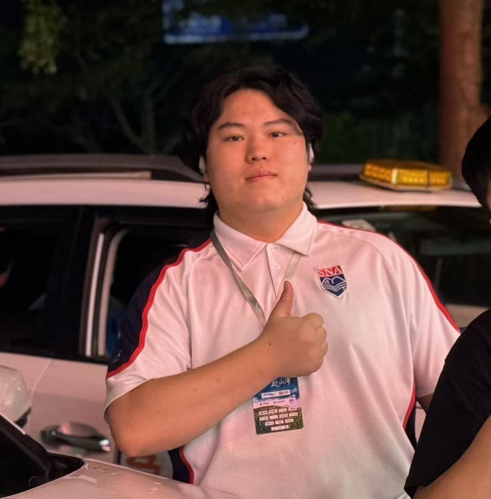
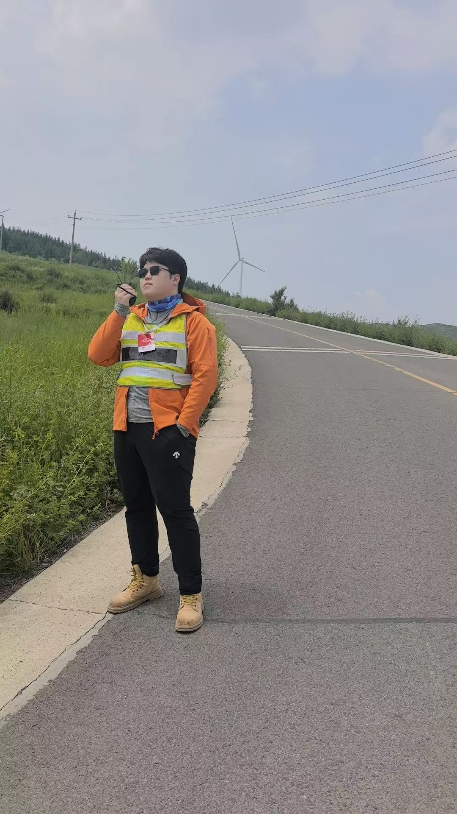
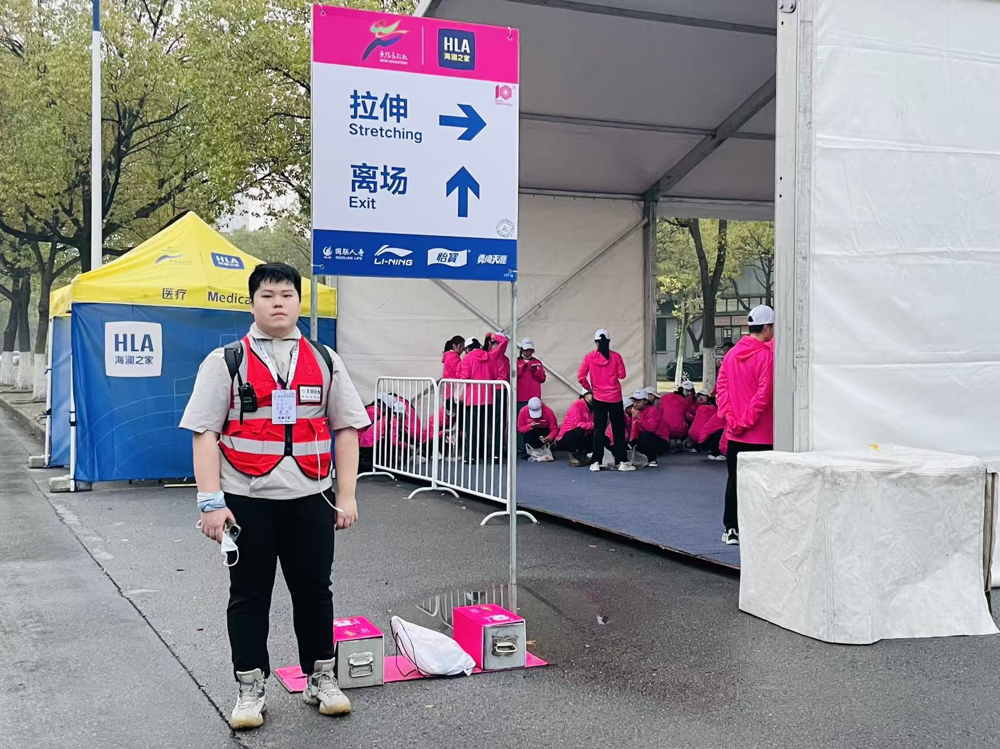
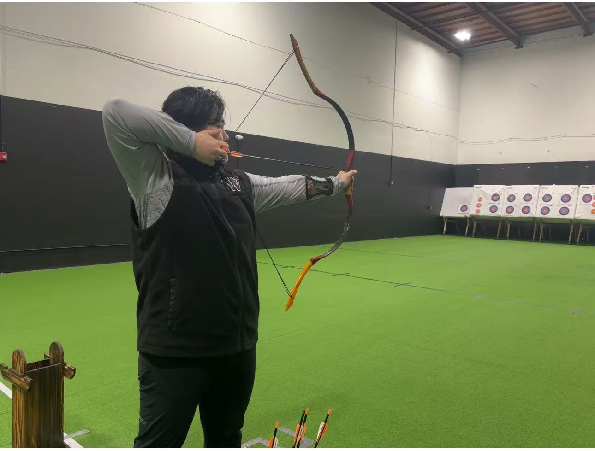
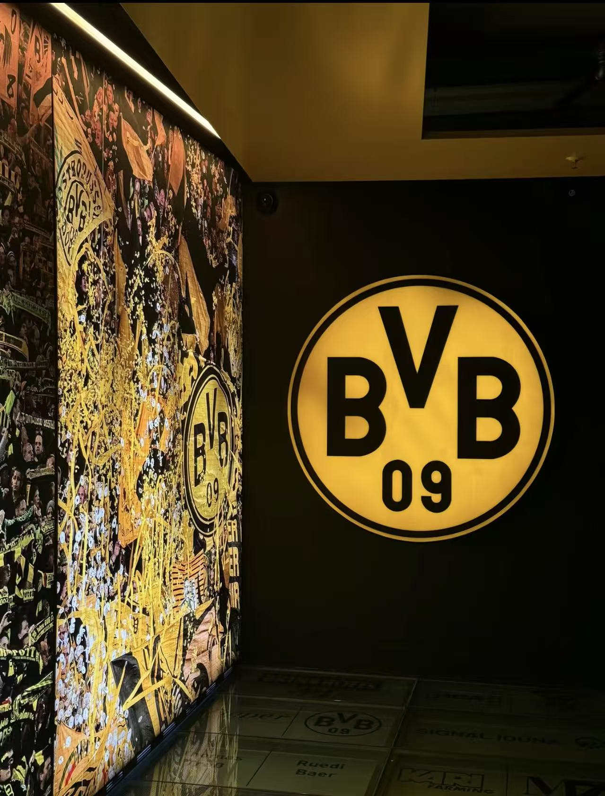
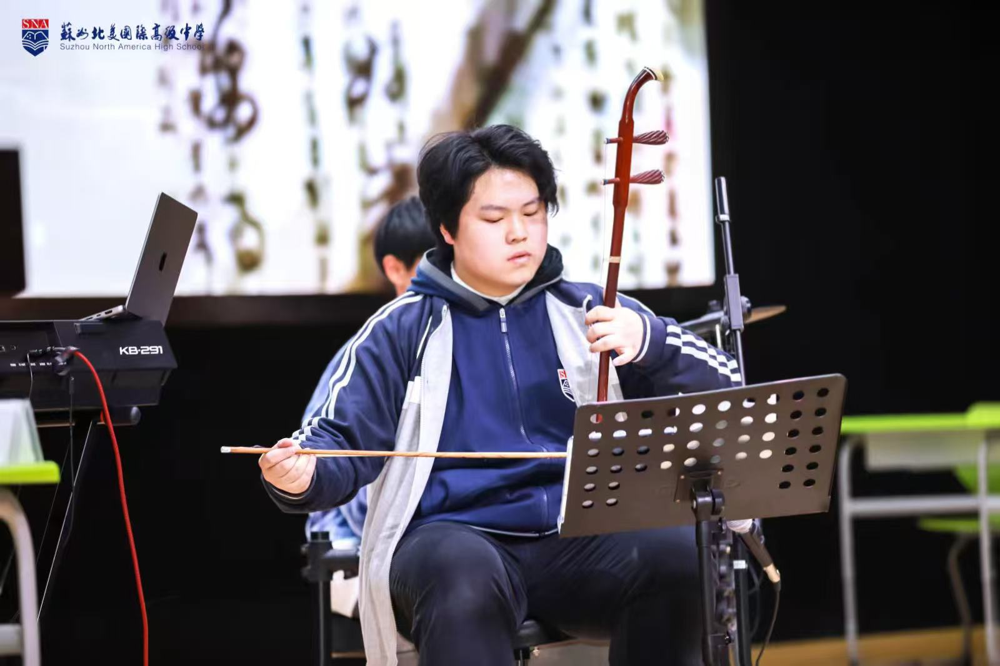
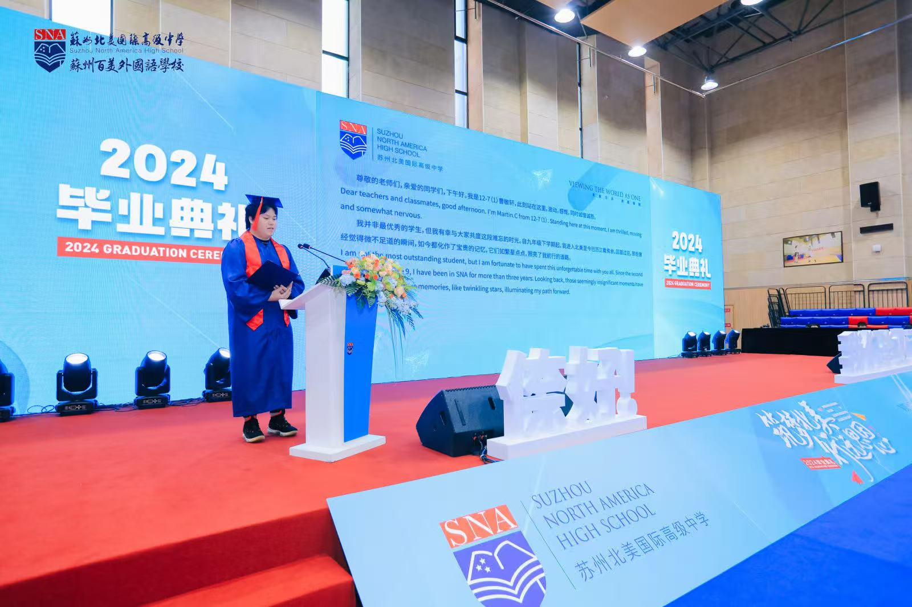

Beyond work
Care, focus, and curiosity shape how I meet the world.
Research and design are only part of how I learn about people and systems. Event support taught me preparedness; archery and wrestling taught me attention; music, games, history, maps, and architecture keep me curious about how worlds are constructed.

01 · Prepared to help
Care became practical before it became academic.
My older sister works in healthcare, and my family introduced me to CPR and rescue breathing when I was young. In my first year of high school, I earned an AHA Heartsaver credential. I later joined safety and medical-support teams for marathons and Hood to Coast China relay events.
Those roles taught me to notice the quiet parts of a system: handoffs, radio communication, route conditions, fatigue, supplies, and the difference between knowing a procedure and making it usable under pressure.


02 · Focus in motion
Some activities make attention physical.
I practice traditional Chinese archery and enjoy wrestling, grappling, billiards, and many other sports. Archery compresses posture, breathing, force, and timing into one release. Wrestling makes feedback immediate: balance and intention are revealed through another person's movement.
Both give me a kind of movement-based meditation. They clear competing thoughts and return attention to the present task—an experience that also informs my interest in embodied interaction and human performance.

03 · Systems, stories, and worlds
I enjoy learning the rules of a world—and noticing when they change.
I read novels, follow Borussia Dortmund and Marco Reus, and play across genres: deck-builders such as Slay the Spire; open worlds and long-running series such as Assassin's Creed and Where Winds Meet; tactical shooters; MOBAs; and auto-battlers. Different genres teach different forms of attention—resource tradeoffs, spatial models, team coordination, timing, and adaptation.
My more unusual shelves are filled with Chinese history, traditional culture, architectural drawings, and maps. I like seeing how a building, city, game, or institution makes a complex system legible through structure.

A few more frames
Expression matters, too.
Singing, learning instruments, and speaking in public give me other ways to listen, communicate, and be present with an audience.

